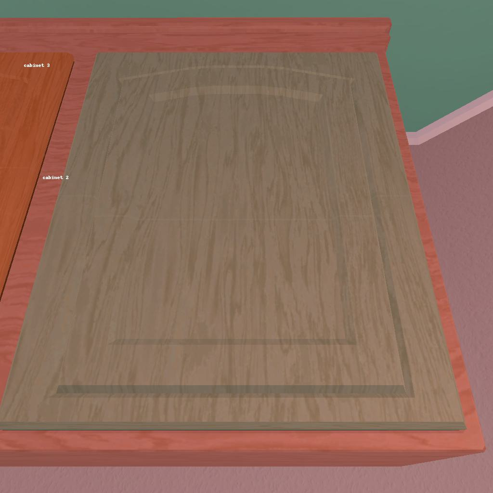

---------------------------------------------------------task: 23---------------------------------------------------------
--------------------------------------------------------------------------------------------------------------------------------------------------------------------
--------------------------------------------------------------------------------------------------------------------------------------------------------------------
Step:--------------------------------------------------------------------------19-------------------------------------------------------------------------------
----------------------------------------
VLM Prompt:
Image1:
Image2:
**Instruction**
1. Analyze the provided image to identify all visible household objects, focusing on those relevant to the task description "heat some mug and put it in coffeemachine."
2. Use the analysis of the image and the task hint "The agent must find an object of the desired type, pick it up, go to a microwave, heat the object with the microwave, then find the correct location to place it, and put it down there. The agent does not need to use the microwave button or open the microwave to heat the object, and the agent just needs to do action that is "heat the object with the microwave"." to answer the question: what is the most reasonable action in the choices for the task description "heat some mug and put it in coffeemachine"?
4. Decide and write the answer using the template: The answer is: (i): , where i is the real number. If there is no desired object in the image, search every place based on **Initial Observation** to find the object. And if no one is exactly correct, choose a similar answer.
**Initial Observation**
You are in the middle of a room. Looking quickly around you, you can see cabinet (1-15), fridge (1), countertop (1-4), drawer (1-4), microwave (1), toaster (1), coffeemachine (1), garbagecan (1), sink (1), stoveburner (1-3), sinkbasin (1)
**Answer Choices**
(1): go to cabinet 2
(2): go to fridge 1
(3): go to countertop 1
(4): go to cabinet 4
(5): go to cabinet 5
(6): go to cabinet 6
(7): go to cabinet 7
(8): go to drawer 1
(9): go to drawer 2
(10): go to cabinet 8
(11): go to drawer 3
(12): go to cabinet 9
(13): go to cabinet 10
(14): go to drawer 4
(15): go to microwave 1
(16): go to cabinet 11
(17): go to toaster 1
(18): go to cabinet 12
(19): go to cabinet 13
(20): go to cabinet 14
(21): go to cabinet 15
(22): go to countertop 2
(23): go to coffeemachine 1
(24): go to garbagecan 1
(25): go to countertop 3
(26): go to countertop 4
(27): go to sink 1
(28): go to stoveburner 1
(29): go to stoveburner 2
(30): go to stoveburner 3
(31): go to sinkbasin 1
(32): open cabinet 3
(33): close cabinet 3
(34): examine cabinet 3
**Answer**
Let's think step by step by following the instructions.
----------------------------------------
----------------------------------------
Original Response:
First, we need to find a mug to heat. The mug is likely to be found in a cabinet or a drawer near the coffeemachine. The images provided show the inside of cabinet 1, which is empty, and cabinet 3, which is closed. Since we cannot see inside the closed cabinet, we cannot determine if there is a mug there without further action.
Based on the initial observation, the agent has not yet checked cabinets (2, 4-15) or drawers (1-4). Since cabinet 3 is closed in the image, it could potentially have a mug inside. However, the task requires us to "search every place" if there is no desired object in the image. Since we have not seen inside cabinet 3, it is reasonable to examine it to check for the mug.
Therefore, the most reasonable action from the choices given for the task description "heat some mug and put it in coffeemachine" would be to examine cabinet 3, as it is a likely location for storing mugs and has not been checked yet.
The answer is: (34): examine cabinet 3.
----------------------------------------
----------------------------------------
>>> Refine Original VLM Response and Get Pure Action: examine cabinet 3
----------------------------------------
-----------------------------------------------------------------
Running time: 11.27376675605774 seconds
Total Money: 11.690290000000005
-----------------------------------------------------------------
-----------------------------------------------------------------
Text Observation:
-----------------------------------------------------------------
UNSUCCEED